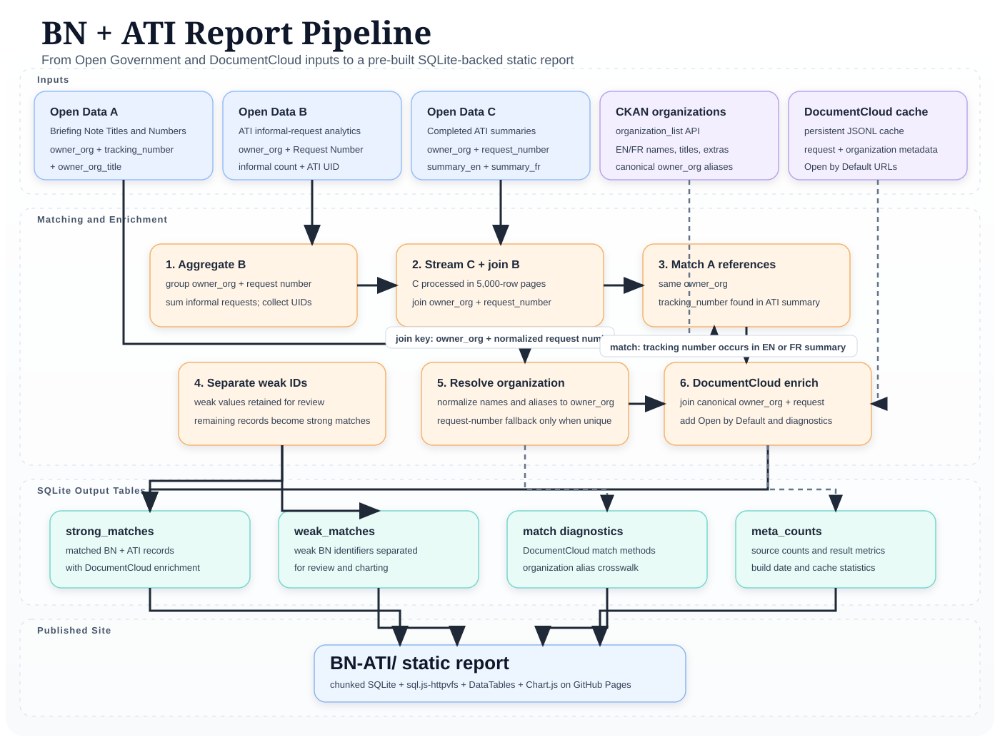

BN × ATI ReportBN × ATI Report
This pre-built report finds briefing-note reference numbers in completed
Access to Information summaries, combines ATI informal-request usage
metrics, and identifies records available through Open by Default.
Data pipeline
The report combines three Open Government datasets, organization aliases,
and a persistent DocumentCloud cache before publishing the matched records
through a pre-built SQLite database.

Matched records
Open Data Inputs
Loading Open Data input counts…
Summary metrics
Loading report metrics…
Weak briefing-note identifiers
Counts of weak identifiers that can produce false-positive matches,
grouped by organization.